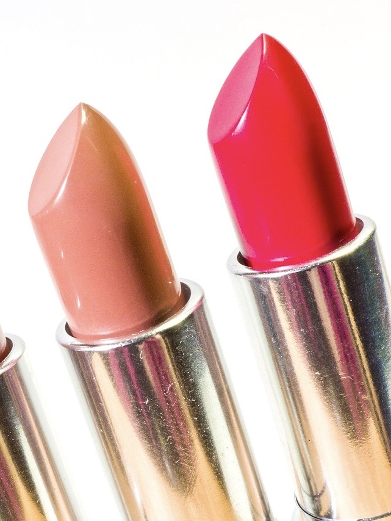
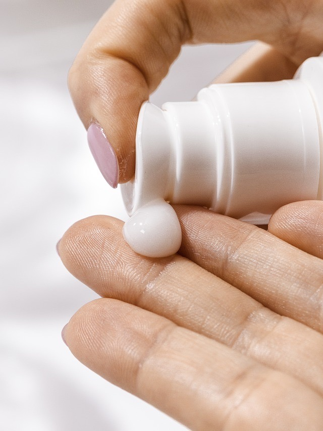
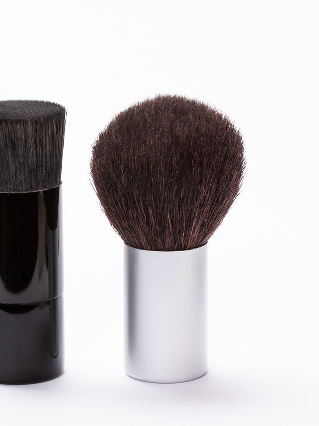
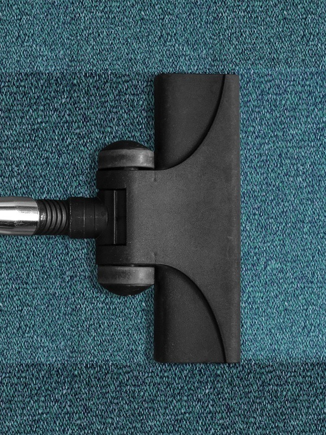
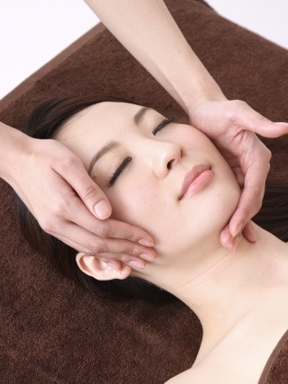
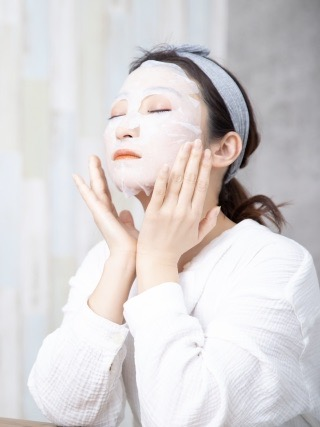
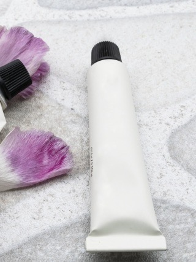

Price
Cut
カット¥5,500~
[シャンプー・カット・スタイリング] ショートマッサージ付きで、リラックスできるカットメニューです。
スクールカット¥4,500~
高校生までの方はこちらのお値段でカットいたします。
前髪カット¥1,000~
Color
全体カラー¥7,000~
根元から毛先まで染めるメニュー。（※スリータッチは+¥540）
カラーリタッチ¥5,500~
根元の新生部（黒い髪の毛）のみを染めるメニュー。
ブリーチ¥6,000~
脱色して明るくしたい方へ。（脱色後のカラーも含まれています）
マニキュア（シングルカラー）¥7,000~
酸性カラーを使うメニュー。
ブリーチonカラー（ダブルカラー）¥12,000~
1度ブリーチを行いライトレベルまで明度を上げ、2度目のカラーで色味を入れていくメニュー。パール系カラーを出していきます。
Perm
コスメパーマ¥13,500~
髪と同じ成分のケラチンを配合したコスメ系のカラーリング剤を使うダメージケアパーマ。カラーと同時施術できます。
セクションパーマ¥10,500~
前髪やトップなど、部分的に必要なところにだけかけるパーマ。
デジタルパーマ¥16,000~
痛みが少なく、スタイリングが楽にできるパーマ。
縮毛矯正¥16,000~
髪の痛み具合を見ながら最適な方法で優しく仕上げます。
Facial skin care
リラックゼーションコース¥5,500~
全身がお疲れの方へ。スタンダードなコースですが内容は本格的で満足間違いなし。
Goods
オリジナルシャンプー¥3,000~
柑橘系の香りがするドビーズオリジナルシャンプー。
オリジナルトリートメント¥3,000~
柑橘系の香りがするドビーズオリジナルトリートメント。

フェイシャルスキンケア
ステップ ①
まず初めにアイメイクリムーバーでアイシャドウや口紅などを落としていきます。

フェイシャルスキンケア
ステップ ②
次にクレンジングミルクやクリームを使用しハンドで皮膚表面の汚れを落とします。

フェイシャルスキンケア
ステップ ③
ブラシを使用し毛孔や皮溝のクレンジング。
フェイシャルスキンケア
ステップ ④
〜 肌チェック 〜
センサーで水分量、脂分量、ハリを調べます。

フェイシャルスキンケア
ステップ ⑤
〜 吸引 〜
過剰皮脂や毛穴に詰まった酸化皮脂をやさしく除去。

フェイシャルスキンケア
ステップ ⑥
〜 マッサージ 〜
肌チェックのハリの結果により、ハリがある方はリンパマッサージで老廃物の排泄、ハリの弱まった方は筋肉マッサージでしわ、たるみの改善。

フェイシャルスキンケア
ステップ ⑦
〜 パック 〜
肌チェックの水分量、脂分量の結果により、目的、肌質に合わせたパック剤で整えます。

フェイシャルスキンケア
ステップ ⑧
〜 仕上げ（ペルチェ） 〜
ホットでクリームやエッセンスを肌に馴染ませ、クールでほてりを鎮め毛孔を引き締めます。
最後にＵＶミルクで紫外線対策。